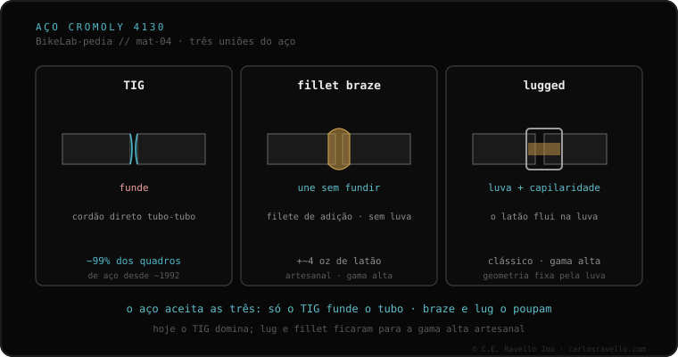

O aço é o material mais versátil de unir, e tem três caminhos documentados. O TIG funde os próprios tubos para fundi-los (no aço, acima de ~1450 °C). O fillet brazing os une com um aporte de bronze ou prata que funde a menor temperatura, sem fundir o tubo. O lugged usa uma luva (lug) na união, com o aporte entrando por capilaridade. Na prática, cerca de 99% dos quadros de aço fabricados desde ~1992 são TIG.
Se o seu quadro for de aço, você tem o material mais agradecido dos quatro. Mas "agradecido" não é "qualquer um solda": o truque está em quem toca a parede fina.
O TIG funde o próprio metal dos tubos para fundi-los; no aço isso ocorre acima de uns 1450 °C. É rápido, robusto e barato de produzir, e por isso domina a fabricação moderna. O fillet brazing joga diferente: não funde o tubo, mas o une com um aporte de bronze ou prata que funde a menor temperatura. Altera menos a estrutura do tubo, deixa uma transição lisa e lixável, mas pesa um pouco mais e é mais lento e caro.
O lugged é a terceira via: usa uma luva (lug) que envolve a união, e o aporte entra por capilaridade entre o lug e o tubo. É a estética clássica do quadro de aço artesanal. Na prática, cerca de 99% dos quadros de aço fabricados desde ~1992 são TIG; o lug e o fillet ficam para a alta gama e a construção artesanal.

Esta é a entrada para o material mais versátil do cluster. Encaixa diretamente com a diferença entre fundir o tubo ou uni-lo sem fundi-lo (TIG e brazing), com o modo como cada material acumula ou não dano com o uso — a fadiga por material — e com as perguntas que convém fazer ao soldador antes de deixar o quadro. Saber qual dos três caminhos seguiu o seu quadro é a primeira coisa que muda a conversa.
Se tiver dúvidas sobre a técnica, o tubo ou o estado de uma união, mande o caso. Diagnóstico real, sem vender nada. Fale conosco no WhatsApp
Três caminhos documentados. O TIG funde os próprios tubos para fundi-los (acima de ~1450 °C no aço). O fillet brazing os une com um aporte de bronze ou prata que funde a menor temperatura, sem fundir o tubo. O lugged usa uma luva (lug) na união, com o aporte entrando por capilaridade.
Na prática, cerca de 99% dos quadros de aço fabricados desde ~1992 são TIG. O lug e o fillet ficam para a alta gama e a construção artesanal: alteram menos a estrutura, mas pesam um pouco mais e são mais lentos e caros.
Que seja o mais fácil de unir não significa que qualquer ferreiro sirva. Se o quadro for de tubulação fina de marca ou tiver luvas, o excesso de calor de quem solda vigas queima a parede fina ou derrete a união de bronze ao lado.